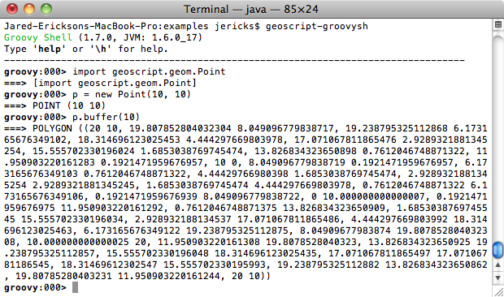
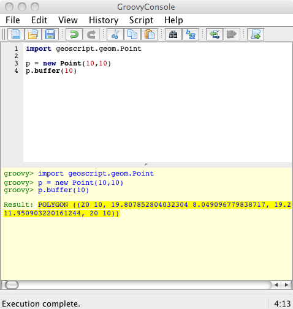

Using GeoScript Groovy¶
geoscript-groovy¶
The geoscript-groovy command can run scripts saved as files.
geoscript-groovysh¶
The geoscript-groovysh command starts an interactive shell.
geoscript-groovyConsole¶
The geoscript-groovyConsole command runs a desktop application or mini ide. You can create, edit, save, and run scripts.
